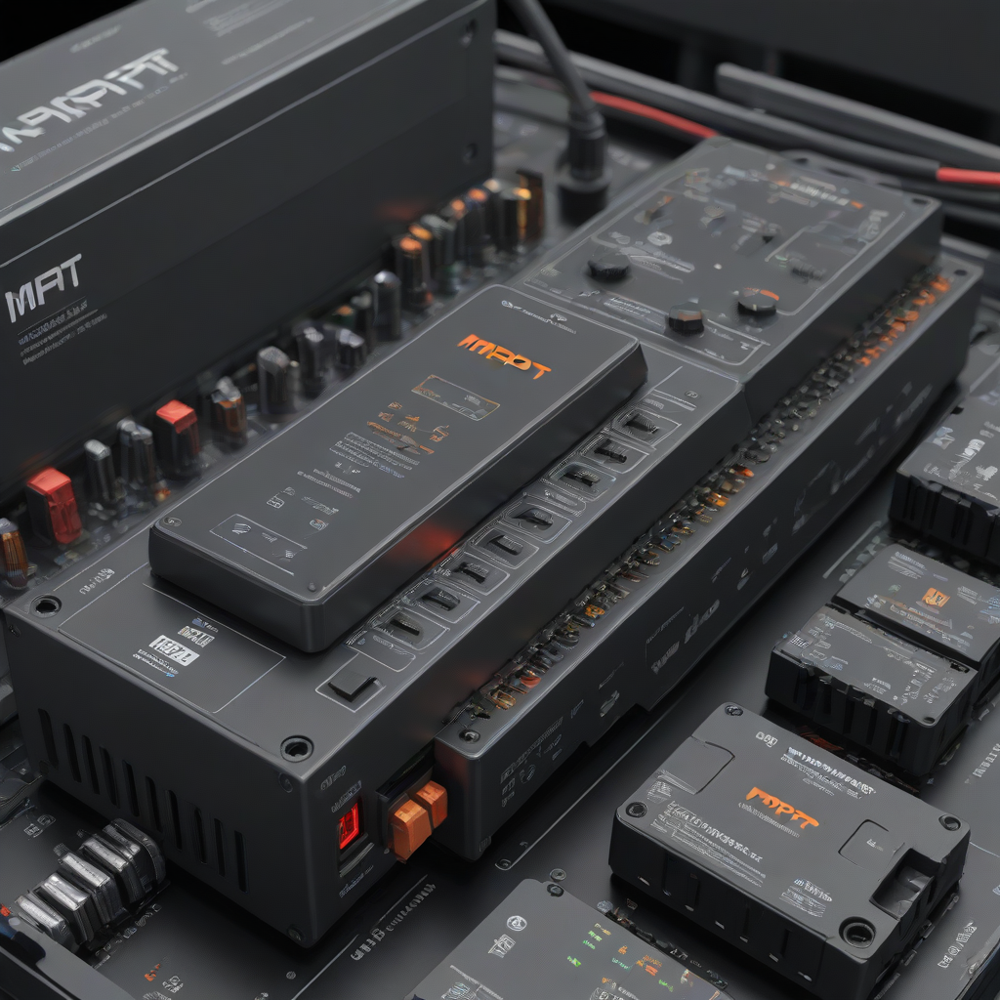
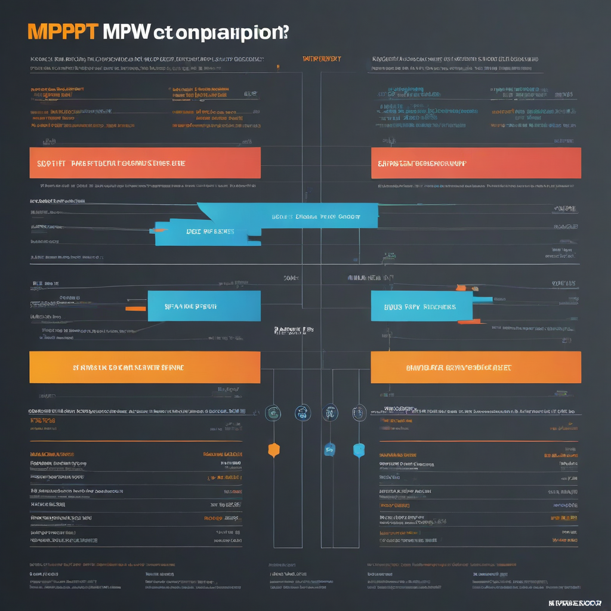

When you’re designing or upgrading a solar power system, the charge controller is one of the most overlooked—but most impactful—components. It’s the brain that decides how efficiently your solar panels charge your batteries. Two technologies dominate the market: MPPT (Maximum Power Point Tracking) and PWM (Pulse Width Modulation). Choosing between them can mean hundreds of extra kilowatt-hours per year—or lost savings over your system’s lifetime.
In 2026, with solar panel prices falling but battery storage costs remaining relatively high, every watt counts. Whether you’re powering a tiny RV, a remote cabin, or a whole-home backup system, understanding the real-world differences between MPPT and PWM isn’t just academic—it directly affects your payback period and energy independence.
We’ve updated this guide with the latest 2026 U.S. market data—from panel and battery pricing to regional performance variances—so you can make a confident, cost-smart decision. Let’s break it down step by step.
What is MPPT vs PWM and Why It Matters

Core Technology Explained
Both MPPT and PWM manage the flow of electricity from your solar panels to your batteries—but they do it in fundamentally different ways:
- PWM acts like a simple on/off switch: it matches the panel’s voltage directly to the battery voltage. If your 60-cell panel outputs 35V but your battery bank is at 12V (24V/48V systems use step-down), PWM simply “drops” the voltage, sacrificing excess voltage as heat. Think of it like using a narrow pipe to fill a tank—you can only push what fits.
- MPPT is a smart voltage converter: it tracks the panel’s maximum power point (where it delivers the most watts) and dynamically converts excess voltage into additional current. This lets you run high-voltage panels (e.g., 400W panels at 40V) with a 48V battery bank without losing efficiency. It’s like using a variable-speed pump—you maximize flow no matter the conditions.
Why It Matters in 2026
In today’s solar landscape, battery storage is critical for resilience and time-of-use optimization. With Tesla Powerwall starting at $11,500–$15,500 and Enphase IQ Battery at $4,000–$8,000 (2026 prices), you want every watt of solar energy to count. MPPT controllers extract more usable energy, especially in non-ideal conditions—making your expensive battery

Plus, modern high-wattage panels (350W+) are almost always designed for MPPT compatibility. Using PWM with them means underutilizing your panel investment.
Side-by-Side Comparison
Feature Comparison Table (2026 Data)
| Feature | MPPT (2026) | PWM (2026) |
|---|---|---|
| Avg. Efficiency | 93–98% | 70–85% |
| Max Panel Voltage | Up to 600V (varies by model) | ≤ Battery voltage + 5–10V (e.g., 24V battery = ≤36V max panel) |
| High-Temp Performance | Maintains output (voltage drops less critical) | Significant power loss (voltage collapse near battery voltage) |
| Cold-Weather Performance | Boosts output (higher voltage = more power) | Minimal gain (can’t use extra voltage) |
| Scalability | High (easy to add panels, supports series wiring) | Low (parallel only; strict voltage matching required) |
| Typical Price (30A) | $120–$250 | $35–$75 |
Source: EnergySage 2026 Solar Tech Report, NREL PV System Cost Benchmark
Cost Differences
At first glance, PWM looks cheaper. And it is—initially. But let’s look at real-world economics:
- A 30A MPPT controller costs about $180 on average in 2026 (e.g., Victron SmartSolar 30A: $215; Renogy Wanderer 20A: $65).
- A comparable PWM controller (e.g., Epever Tracer 2210A PWM: $55) saves $125 upfront.
But here’s the catch: MPPT typically generates 15%–25% more energy in real-world U.S. conditions (NREL data). For a 5kW solar array, that’s 750–1,250 extra kWh/year.
Performance Comparison
Let’s model a 4.8kW solar array (12 × 400W panels) in Denver, CO (moderate sun, cold winters):
- PWM System: Panels wired in parallel, each 39V max (must match 48V battery bank). Real-world yield: ~5,800 kWh/year.
- MPPT System: Panels wired in series strings (78V), MPPT converts to 48V. Real-world yield: ~7,100 kWh/year.
That’s 1,300 extra kWh/year with MPPT—enough to offset a full month of average U.S. household usage (per EIA data: ~1,071 kWh/month).
In hot climates (e.g., Phoenix), the gap narrows to ~10% due to voltage drop, but MPPT still wins on consistency and battery health.
Cost Breakdown
Initial Investment
Assume a typical 7.2kW backup system (2026 pricing):
- 28 × 260W panels (or 18 × 400W): $18,000–$25,200 (at $2.50–$3.50/W)
- MPPT controller (60A): $180–$250
- PWM controller (60A): $100–$150
- 48V battery bank (e.g., 13.5kWh): $9,500–$13,000 after 30% ITC
The controller represents less than 1% of total system cost—yet it directly influences 10–30% of your energy harvest.
Payback Period & ROI
Let’s compare two identical systems, differing only in controller type:
- Extra energy from MPPT: 1,000 kWh/year (conservative 15% gain)
- Value of that energy: $150/year (U.S. avg: $0.15/kWh)
- Controller cost difference: $100
Payback period: just 8 months. After that? Pure savings.
Over a 25-year system life, that’s $3,650+ in extra value—more than enough to cover the controller *and* extend battery life (by reducing overcharge stress).
Pros and Cons
MPPT: Strengths & Weaknesses
- Pros:
- 15–30% more energy harvest (especially in winter, shade, or partial cloud cover)
- Supports higher-voltage panel wiring (longer cable runs, smaller gauge wire = savings)
- Extend battery life via precise voltage regulation
- Better for hybrid systems (solar + generator/grid)
- Cons:
- Higher upfront cost
- More complex (potential for firmware issues; needs quality units)
- Slightly larger physical footprint
PWM: Strengths & Weaknesses
- Pros:
- Very low cost—ideal for micro-systems (RV, boat, small off-grid)
- Simple, robust, near-foolproof operation
- Minimal maintenance
- Cons:
- Up to 30% energy loss in non-ideal conditions
- Panel voltage must closely match battery voltage (limits panel choices)
- Shorter battery life due to less precise charging
- Not future-proof (hard to expand later)
Best Use Cases (2026)
- Choose MPPT if:
- You’re installing a grid-tied + backup system (e.g., with Powerwall or Enphase)
- Your panels are high-wattage (300W+) or wired in series
- You live in a cold, cloudy, or variable-climate region (e.g., Northeast, Pacific Northwest)
- You plan to expand your system later
- Choose PWM if:
- You’re powering a small, off-grid cabin or shed (<1.5kW array)
- Your panels are low-voltage (e.g., 12V or 24V RV kits)
- 预算 is tight and climate is consistently sunny (e.g., Southern California, Arizona)
- You only need to trickle-charge a battery (no daily deep cycling)
Frequently Asked Questions
Which is better for home solar with batteries?
MPPT is the clear winner for home systems with batteries in 2026. With rising electricity rates (avg. $0.168/kWh in Q1 2026, per EIA) and the need to maximize every kWh stored, MPPT’s efficiency gains directly translate to lower utility bills and longer backup runtime. For example, in a 10kWh battery system, MPPT can give you 1.5–2.5 extra usable kWh per charge cycle—critical for multi-day outages.
What’s the real cost difference today?
For a typical 5kW residential system:
- PWM controller (60A): $80–$130
- MPPT controller (60A): $180–$280
That’s $100–$150 more upfront for MPPT—but you’ll recoup it in under 1 year through extra energy harvest, especially if you use the system for backup power where every kWh saved is worth $0.30+ during peak rates.
Is installation harder for MPPT?
No—not if you buy a quality unit. Most modern MPPT controllers (e.g., Victron, Renogy, EPever) include:
- Auto-detection of battery voltage
- Pre-programmed charge profiles (AGM, LiFePO₄, etc.)
- Bluetooth/WiFi monitoring (via smartphone app)
Wiring is similar to PWM—but you must follow series-string voltage limits (e.g., keep panel string voltage under the controller’s max DC input). See our Solar Wiring Guide for step-by-step diagrams.
Can I use PWM with modern high-voltage panels?
Technically yes—but practically no. Most 60/72-cell panels have Vmp of 30–40V. A 12V PWM controller can only use ~13–15V of that—wasting 60% of your panel’s potential. You’d need to wire panels in parallel at low voltage, which requires heavy-gauge wire and increases installation cost. MPPT avoids this entirely.
Does MPPT work better with lithium batteries?
Yes—critically so. Lithium batteries (e.g., LiFePO₄) require precise voltage/current control to avoid damage. MPPT controllers offer multi-stage charging (bulk, absorption, float) and can be tuned for lithium chemistry. PWM controllers often lack fine-grained control, risking overcharge or undercharge. Many top lithium brands (like EcoWorthy or Battle Born) recommend MPPT only.
What about MPPT solar inverters?
Some hybrid inverters (e.g., Growatt SHILE, Outback Radian) integrate MPPT circuitry—no separate controller needed. These are ideal for grid-tied + backup setups and often include advanced features like solar prioritization and grid charging. For full off-grid, a standalone MPPT controller remains the most reliable option.
Conclusion
Best for Most People: MPPT
In 2026, MPPT is the default choice for >90% of residential solar + storage installations. The upfront cost premium is small, the ROI is fast, and the long-term energy harvest gains protect your investment in panels and batteries. With 30% federal ITC still available (through 2032), spending a little more now on MPPT ensures you maximize your tax savings per kWh generated.
Budget Pick: PWM (with caveats)
Only consider PWM if: your system is small (<1.5kW), off-grid, in a hot/sunny climate, and powered by low-voltage panels (e.g., 12V RV kits). Even then, many manufacturers now offer 20A MPPT controllers for under $70—making the upgrade almost risk-free.
Premium Pick: Smart MPPT with Monitoring
For whole-home backup (e.g., Tesla Powerwall + solar), invest in an MPPT controller with:
- Remote monitoring (via app or solar server)
- Smart load control
- Multi-stage lithium-compatible charging
Top picks in 2026: Victron SmartSolar, Renogy Wanderer/Comet, or integrated inverter-controllers like Growatt X-Hybrid.
Action Step: Before buying, run your config through NREL’s PVWatts Calculator—compare MPPT vs PWM energy output for your zip code and roof orientation. You’ll see the difference in black and white.